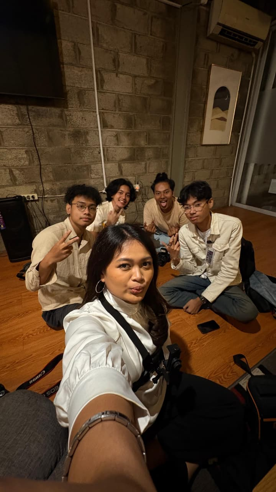
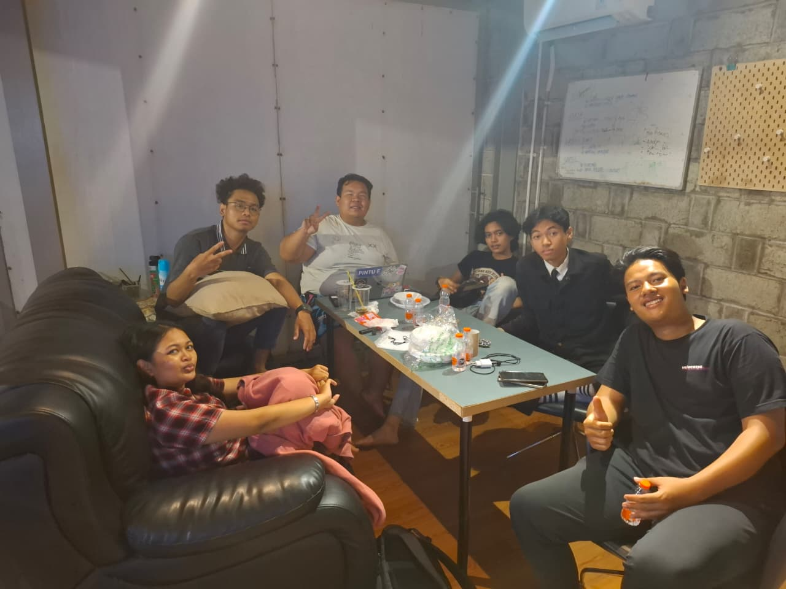
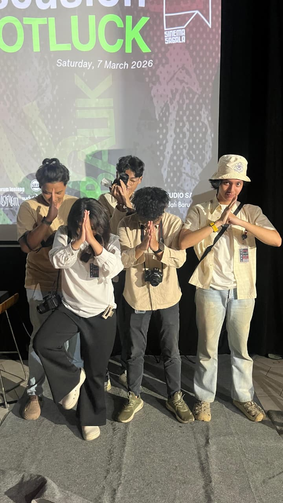
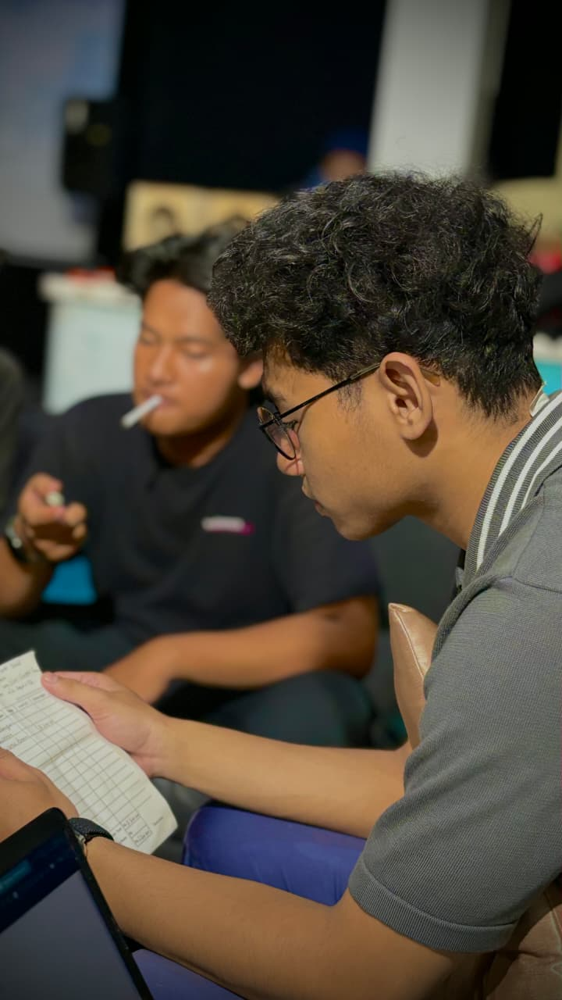
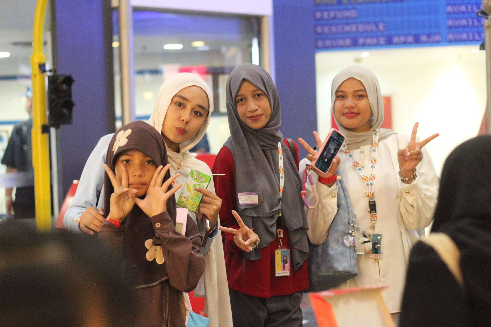
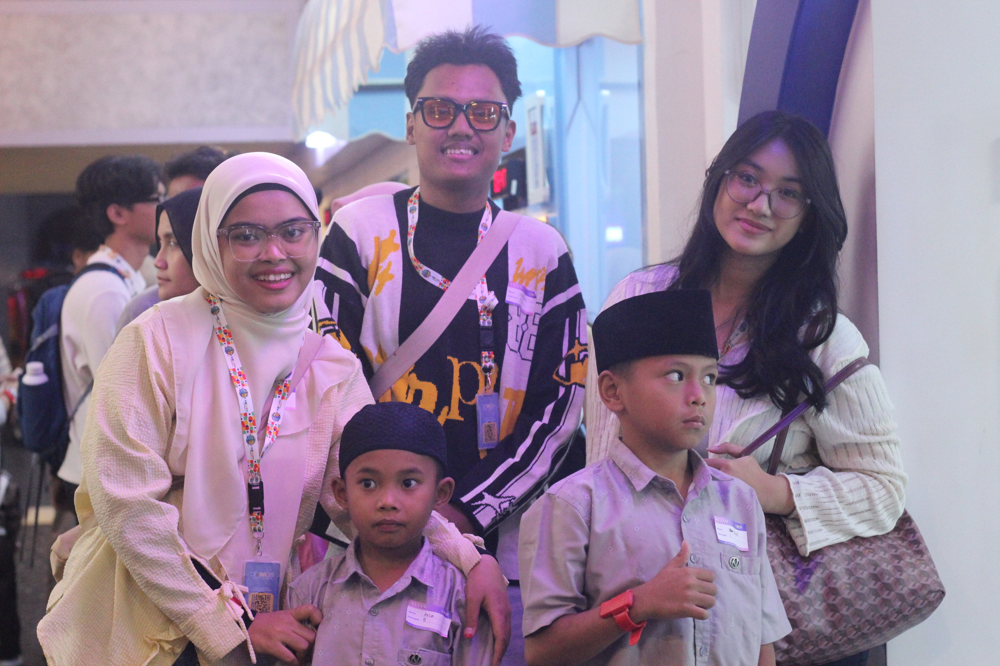

Career History
My Experience
Visual Production
2025Koraksi
- Developed custom motion graphics, including an animated envelope sequence for digital communications.
- Designed high-quality social media content and posters aligning with branding guidelines.
- Assisted in resolving complex technical design challenges.
3D Animator
2022Kulstori
- Animated the characters "RISKA DAN SI GEMBUL" in 3D environment.
- Skilled in rigging and animating characters for smooth and natural movements.
- Collaborative team player focused on engaging audiences.
Socmed Designer & Editor
2022Morehope
- Creating engaging poster designs for various social media platforms.
- Actively developing innovative creative concepts with the team.
- Responsible for recording and editing videos for social contents.
Social Media Designer
2022Commet Kreasi Indonesia
- Designed visual content for corporate social media platforms.
- Edited promotional videos for SPG Commet Kreasi Indonesia.
- Created and published SPG recruitment promotion designs.
Graphic & Video Support
2022Terra
- Designed promotional posters focusing on property marketing.
- Edited and recorded videos for property promotion materials on social media.
- Operated camera to shoot professional footage for Terra.
2D Animation & Editor
2021-2023TEFA
- Designed 2D school-themed illustrations for animated videos.
- Produced and animated 2D videos for school promotion.
- Created complete 2D character designs in Adobe software.
Laboratory Assistant
PresentUniversitas Gunadarma
- Assisted lecturers in teaching Python and Data Science modules.
- Guided students in troubleshooting code and logic.
- Ensured laboratory tech assets were ready for practical sessions.
Film Production
PresentPeradox Picture
- Edited recorded footage to enhance storytelling and visual flow.
- Assisted camera department for effective and creative angles.
- Supported lighting setup for cinematic exposure.
Cuplikan Film: 404 Friends
Community
Volunteer Experience
Volunteer Sagala Studio
Sagala Studio • 2026 March
- Captured comprehensive photo and video documentation throughout the event.
- Edited and produced engaging after-movie videos post-event.
- Directed and coordinated participants to ensure high-quality portrait sessions.




Volunteer Edutrip Koraksi
Koraksi • 2025
- Coordinated and supervised a team of volunteers, ensuring all team members were aligned with the event’s objectives.
- Facilitated field missions assigned by organizers, guiding participants through educational goals.
- Ensured safety, well-being, and group engagement dynamically.


PKKMB Volunteer
Universitas Gunadarma • 2025
- Provided on-the-spot assistance and answered inquiries from new students regarding schedules.
- Helped students navigate the campus and locate important facilities like library and clinic.
- Assisted in distributing orientation materials and refreshments.


React Day Volunteer
PPIM UIN JAKARTA • 2025 Aug
- Supported design team by editing event cards and promotional videos for Instagram.
- Created engaging content to boost audience interaction.
- Collaborated to develop the eco-friendly game using recycled materials.
- Managed booths, facilitating interactive activities, raising environmental awareness.


World Turtle Day (TEBAK X KORAKSI)
Koraksi • May 2026
- Handled the logistical backbone of community initiatives, from equipment handling to resource procurement.
- Ensured smooth event operations by quickly addressing material shortages and managing supply chain needs on the field.
- Facilitated a seamless event experience through strategic setup and space coordination, allowing the team to focus on spreading impact.


Percik X Koraksi
Koraksi • May 2026
- Captured high-quality individual portraits of children during community events, ensuring each child felt comfortable and empowered during the photography session.
- Documented candid and emotional moments throughout the event, weaving a visual narrative that showcases the spirit of the community and the impact of the program.
- Managed the curation and organization of visual assets, ensuring all event documentation is archived and ready for use in social media campaigns and reports.


Volunteer Kidzania
Koraksi • 25 Juli 2026
- Documented the Kidzania volunteer event by capturing engaging photos and videos of children participating in various activities.
- Coordinated event logistics and guided children through educational role-play activities, ensuring a safe and fun environment.
- Facilitated interactive sessions and managed group dynamics to provide a memorable learning experience for the children.


